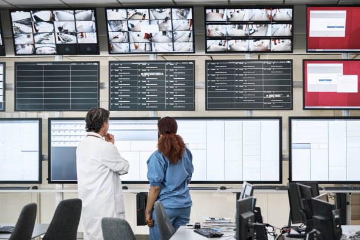

A unique project aimed at ensuring that the employees of Unilever enjoyed a seamless lunch break. In the previous analysis of the canteen management system of Unilever,
It was discovered that the time employees spend getting a meal from the canteen was a significant part of the disruption to work being done in the organisation, and there was an increased waste of about 30% daily from the canteen.
This anomaly affected employees' productivity and increased wastage in the canteen management. Therefore, change was needed.
As a Business Analyst and Team Lead for this project, I collaborated with a team to design and implement a Canteen Ordering System at Unilever,
which was intended to enhance employee satisfaction and operational efficiency.
The system provides Unilever with numerous significant advantages by simplifying the meal ordering process, thereby leading to enhanced efficiency, Time Optimization, Cost Control and Payroll Integration,
Data-Driven Decision-Making and Improved Employee Experience.


An insightful project aimed to analyse sales and identify revenue generating regions.
This was pertinent because from the analysis carried out, it was discovered that the total revenue generated was low
compared to other business months. Therefore, there was need to determine profitable product categories, analyse the sales trends and the distribution of orders across the selected states in the United State of America.
The actionable insights developed from this project informed strategic decisions.
PizzaPro Delights encountered challenges in order management and customer experience, which had an effect on operational efficiency
and customer experience. To address these challenges, it was imperative to establish a more efficient ordering and administration system.
The solution automates order tracking, optimizes delivery logistics, and enhances customer satisfaction.
Power BI was leveraged to analyse key business metrics and develop recommendations.

This power BI analysis focused on identifying key revenue-generating areas in Hospital
management for a Canadian hospital based in Calgary. The dashboard developed provided data-driven insights into financial performance, patient billing trends,
and departmental contributions to overall revenue within the hospital.

XpressStores is a company based in Nigeria, and its customers are primarily
located across different cities. The company deals with the sales of gadgets ranging from laptops to mobile phones and accessories. This project aimed at analysing datasets
using SQL to identify key business insights such as customer purchasing patterns, payment history, delivery efficiency,
and the most purchased product within the store. Actionable recommendations were also developed.
This project aimed at minimising resistance among stakeholders, improve buy-in,
and increase the chances of project success. As a Business Analyst in this project, I was saddled with the responsibility
of identifying and managing the individuals and groups involved. Therefore, the need to develop
a stakeholders register, matrix and RACI matrix was required.

Donec eget ex magna. Interdum et malesuada fames ac ante ipsum primis in faucibus. Pellentesque venenatis dolor imperdiet dolor mattis sagittis magna etiam.